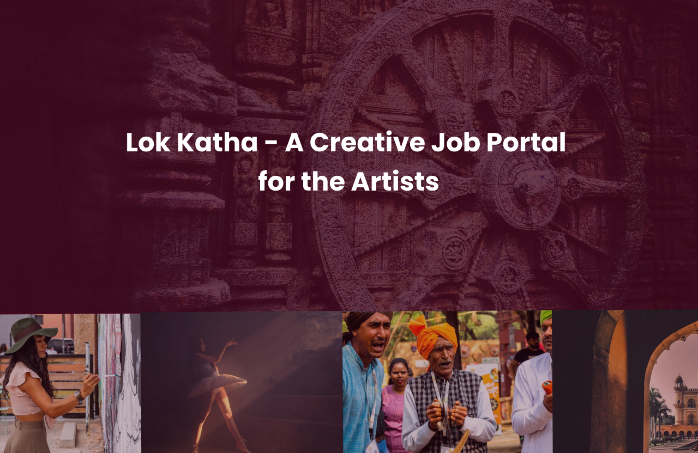
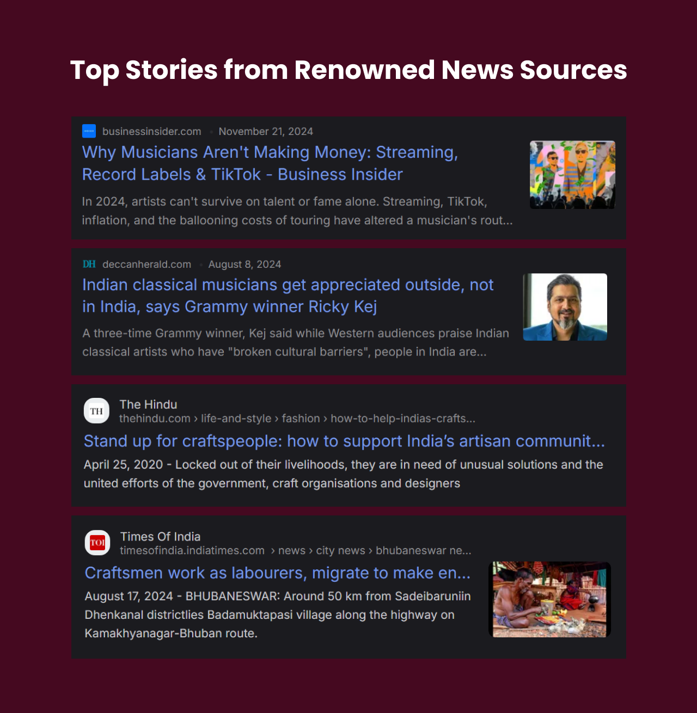
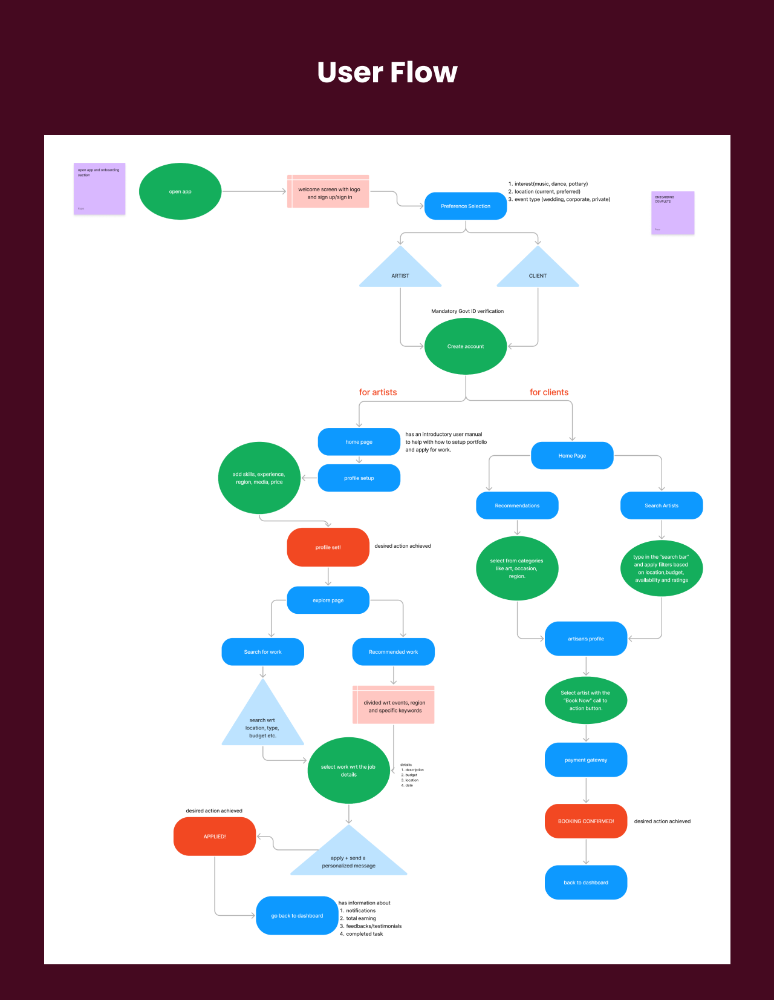
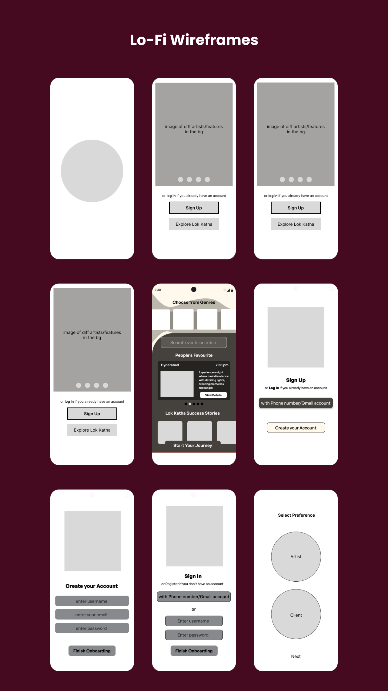
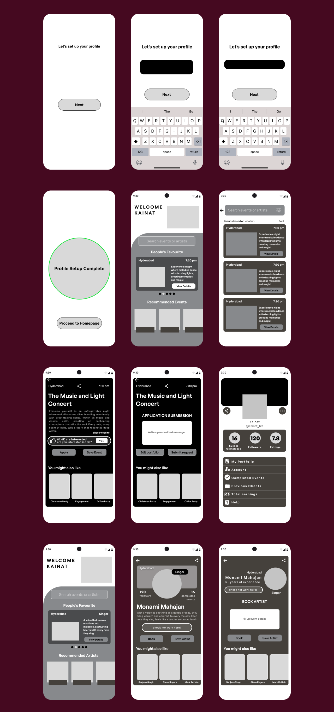
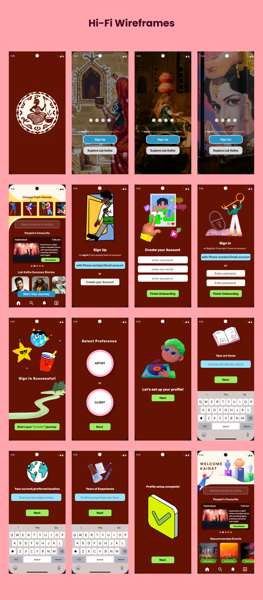
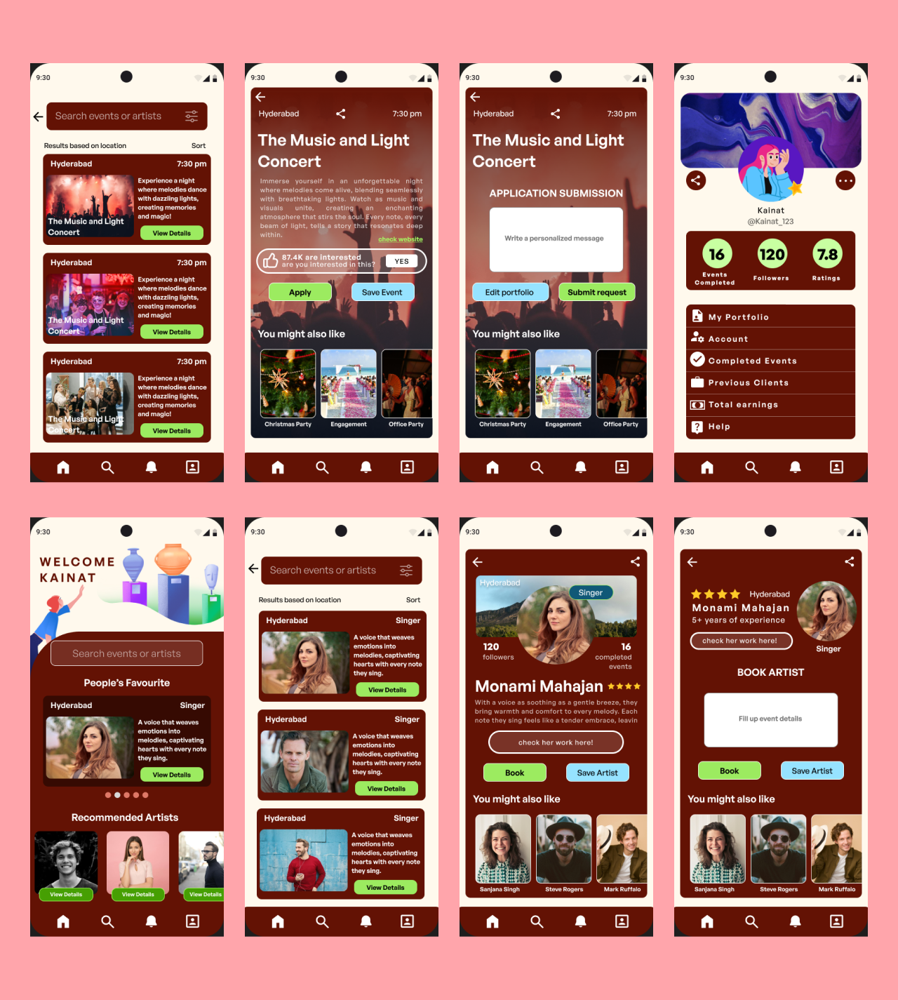
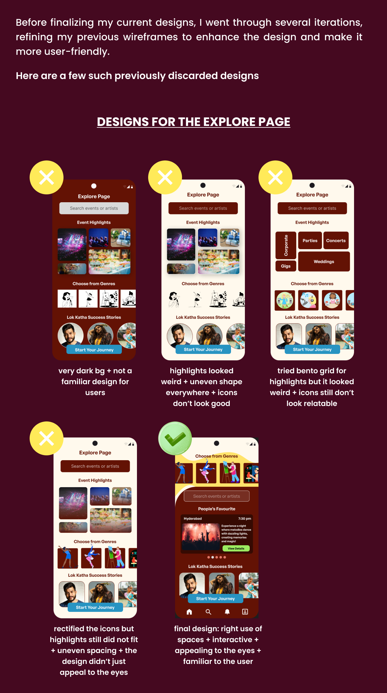
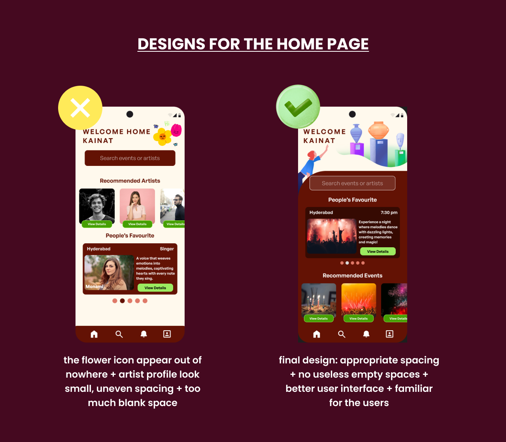
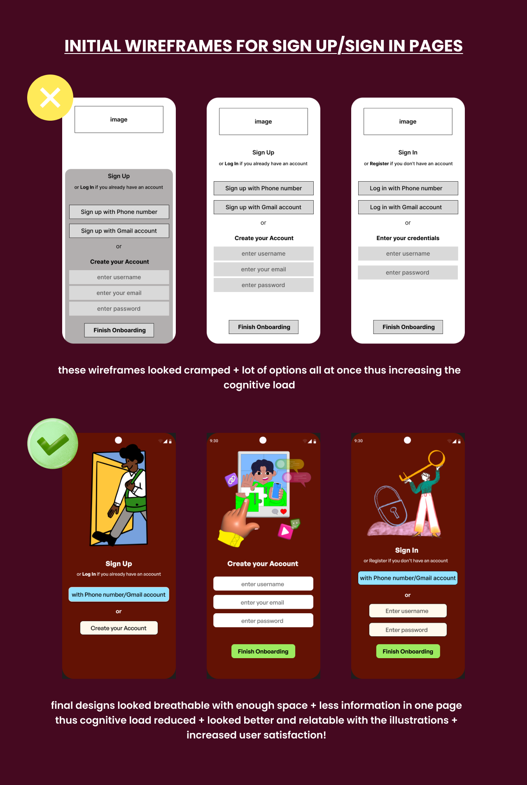

A creative job portal for the artists
Lok Katha connects independent artists directly with clients — no middlemen, fair pay, and a place for local art forms to be seen.

Role
UX Designer
Type
Case study
Platform
Mobile app
Users
Artists and clients
01 · Overview
Empowering artists with Lok Katha
This case study delves into Lok Katha, an app aimed at empowering artists and preserving local art forms. The platform addresses key challenges faced by artists, such as lack of job opportunities, inadequate recognition, and unfair compensation. By eliminating middlemen, Lok Katha ensures transparent and fair payment directly between artists and clients. Additionally, the app shines a spotlight on new and hidden talent, providing them with a platform to showcase their work and gain well-deserved recognition. Through these initiatives, Lok Katha not only supports the livelihood of artists but also fosters the growth and appreciation of local art and culture.
02 · Problem statement
What is the key challenge?
No work opportunities for the artists.
How am I trying to solve it?
I am creating a job portal for them.
Problems
Solutions
Providing a dedicated space for artists to showcase their work, gain visibility, and connect with potential clients or audiences.
Ensuring artists are paid fairly for their craft and talents, fostering financial stability.
Highlighting and celebrating local art, dance, music, and handloom to preserve cultural heritage.
03 · Discover
The artists' problem is documented, and it isn't local
Reporting from Indian and international outlets says the same thing: recognition and pay do not follow the work.

We all enjoy different art forms, don't we? Whether it's dancing, listening to music, or buying local handloom and crafts. But when do we truly start appreciating the artists and giving them the opportunities they deserve?
04 · Competitive analysis
Nothing on the market is built for artists
I checked platforms like Upwork, Fiverr, and Naukri.com, but found they weren't artist-specific. Upwork and Fiverr offer job opportunities across multiple fields, making it difficult for artists to stand out. Naukri.com, on the other hand, primarily focuses on corporate roles, with limited opportunities for creative professions. In contrast, Lok Katha is designed specifically for artists, providing a dedicated platform to help them gain recognition, find relevant job opportunities, and earn fair compensation.
Upwork
Every field at once — artists compete against generalists for attention.
Fiverr
Gig-priced and crowded; hard to stand out or hold a rate.
Naukri.com
Corporate roles first, with limited listings for creative professions.
05 · Why Lok Katha
1
Job Opportunities
2
Promoting Local Art
3
Fair Pay for Artists
4
Direct Client-Artist Connection
06 · Users
Two artists, the same two problems

07 · User flow
One onboarding, two destinations
Preference selection splits the flow early: artists build a portfolio and apply for work, clients search and book. Both land back on the same dashboard.

08 · Design process
01
Discover
02
Ideate
03
Design
04
Test
05
Feedback
Wireframes
The flow was argued out on paper first — screen order, primary versus tertiary actions, and where the artist and client paths diverge.

Lo-fi wireframes
Onboarding, preference selection, profile setup, search and booking, blocked out in grey.


Hi-fi wireframes
Deep maroon and cream, with illustrations carrying each onboarding step so no screen asks for too much at once.


09 · Feedback and iterations
Before finalizing, several rounds of rework
Explore page, home page and sign up — each discarded version is kept with the reason it failed, next to the version that shipped.



10 · Learnings and challenges
Learnings
Challenges
Next case study